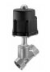

EA-207: Válvula esférica inoxidable 2 cuerpos paso total roscada
Válvula esférica 2 cuerpos, paso total, con bloqueo de palanca, extremos roscados BSPT, 1000 psi, cuerpo y bola en acero inoxidable CF8M, asiento de teflón reforzado 15% con fibra de vidrio RPTFE, vástago inexpulsable, diámetros de ¼ a 2”. Marca Emico
EA-303: Válvula esférica inoxidable 3 cuerpos paso total roscada.

Válvula esférica 3 cuerpos, paso total, con bloqueo de palanca, plantilla de montaje ISO-5211, extremos roscados BSPT, PN63 (1000 psi), cuerpo y bola en acero inoxidable CF8M, asiento de teflón reforzado 15% con fibra de vidrio RPFTE, vástago inexpulsable, dispositivo antiestática, diámetros de ¼ a 4”. Marca Emico
EA-25: Válvula esférica acero al carbono 2 cuerpos paso total bridada fire safe

Válvula esférica 2 cuerpos, paso total, con plantilla de montaje para actuador normalizada ISO 5211, con bloqueo de palanca, extremos bridados ANSI 150, certificado Fire safe, diseño ASME B16.34, ensayos API598 y API 6D, entrecaras ASME B16.10, dispositivo antiestática, cuerpo acero al carbono WCB, bola acero inoxidable CF8M, asiento de teflón reforzado 15% con fibra de vidrio RPTFE, vástago inexpulsable, diámetros de ½ a 12”. Marca Emico
EA-402: Válvula esférica inoxidable 2 cuerpos paso total bridada
Válvula esférica 2 cuerpos, paso total, con plantilla de montaje para actuador normalizada ISO 5211, con bloqueo de palanca, extremos bridados ANSI 150, diseño ASME B16.34, ensayos API598 y API 6D, entrecaras ASME B16.10, dispositivo antiestática, cuerpo y bola acero inoxidable CF8M, asiento de teflón reforzado 15% con fibra de vidrio RPTFE, vástago inexpulsable, diámetros de ½ a 12”. Marca Emico
EA-302: Válvula esférica acero al carbono 3 cuerpos paso total roscada

Válvula esférica 3 cuerpos, paso total, con bloqueo de palanca, extremos roscados BSPT, 1000 WOG, cuerpo acero al carbono WCB, bola acero inoxidable CF8M, asiento de teflón reforzado 15% con fibra de vidrio RPTFE, vástago inexpulsable, diámetros de ¼ y 2”. Marca Emico
R7: Válvula mariposa wafer hierro ductil
Válvula mariposa tipo wafer, para instalar entre bridas ANSI 150 DIN PN10 y PN16, cuerpo en hierro dúctil, disco en acero inoxidable CF8M, vástago en SS 420, asiento en EPDM, cuerpo PN16, con plantilla de montaje para actuador normalizada ISO 5211, a palanca de 2” a 10”, con reductor sin fin y corona de 12’ a 24”. Marca Emico
Medidor de Caudal Rotativo Bajos Caudales
Rango de Medición: 0,025-0,5 L/min…1-25 L/min Agua. Conexión: G ½ AG o Conector de manguera. Material: Polipropileno. Presión máx.: 10 bar. Temperatura máx.: 70 °C. Modelo: DPL I Marca: Kobold
Medidor y Controlador de Temperatura
Con formato de 48x48x83mm, entrada configurable para termocuplas (J, K, R, S, T), termorresistencias (Pt100) lineales (4-20mA o 0-50mV). Modo de control On-Off o PID seleccionable con autosintonía. Salida de control principal analógica (4-20mA,0-10V) y salida secundaria por medio de relé. Alimentación entre 90 y 240Vca. Modelo: CD101 I Marca: KyC
Interruptor de caudal tipo Paleta
Rango de Conmutación: 68-90 L/min…383-533 L/min Agua. Conexión: G ½, ½ NPT. Material: Laton, Acero inoxidable. Max. Presión: 100 bar. Max. Temperatura: 110 °C. Contacto Reed. Modelo: PSE I Marca: Kobold
Bobina para válvulas Selenoides
Descripción: Bobina para válvulas solenoides 24V 50Hz 10W IP00. Marca: Danfoss
Medidor Interruptor de caudal
Descripción: Con Viscocidad Compensada. Rango de Interrupción: 0,1 – 0,45… 5 – 80 l /min. Conexión: G ¼ … G 1 IG. Material: Laton, Acero inox. Max. Presión: 10 bar. Max. Temperatura: 100 °C . Precisión: ± 5% v.EW. Opción: Contacto Reed, Indicador tipo aguja, Salida Analógica. Modelo: VKG I Marca: Kobold
Presostato
Descripción: Presostato. Rango: 2…14 bar. Presión diferencial: 0,7…4 bar. Conexión a proceso: G ¼. Modelo: KP/KPI I Marca: Danfoss
Válvula Selenoide 2/2 vías
Descripción: Válvula solenoide 2/2 vías servoaccionada. Conexión: G ¼. Normal cerrada. Modelo: EV210B I Marca: Danfoss
Bobina para Válvulas Selenoides
Descripción: Bobina para válvulas solenoides 220/230V 50Hz 10W IP67. Marca: Danfoss
Válvula Solenoide 2/2 vías Servoaccionada
Descripción: Válvula solenoide 2/2 vías servoaccionada. Conexión: G ½… G ¾… G 1. Normal cerrada. FKM. Modelo: EV220B I Marca: Danfoss
Válvula Solenoide 2/2 vías Servoaccionada
Descripción: Válvula solenoide 2/2 vías servoaccionada. Conexión: G ¼. Normal cerrada. FKM. Modelo: EV310B I Marca: Danfoss
Transmisor de Presión
Rango de medición: 0…6 bar / 0…10 bar / 0…16 bar. Salida: 4-20 mA. Electrónica: Plug-Pg9. Conexión a proceso: G ¼. Alimentación: 10…30 Vdc. Modelo: MBS 3000 I Marca: Danfoss
Kit para Actuador de Válvulas
Descripción: Service Kit para actuador de válvulas SRC/ARC 76-101.6/NW80-100 Alfa Laval. Marca: Alfa Laval
Interruptores Plásticos de Nivel para Líquidos
Contacto: 1 Contacto Reed. Conexión: G 1/2A IG, ½ NPT, M16. Material: Polipropileno, PVDF. Presión máx.: 10 bar. Temperatura máx.: 100°C. Densidad del Líquido: Desde 0,6 g/ml. Modelo: NKP I Marca: Kobold
Medidor Monitor Contador de Caudal tipo Rotativo
Rango de Interrupción: 0,2-2 L/min…3-60 L/min Agua. Conexión: G ¼…G ¾, ¼ NPT… ¾ NPT. Material: PTFE. Presión máx.: 5 bar. Temperatura máx.: 80 °C. Precisión: ± 2,5 (5) % v. ME. Impulsos de salida. Modelo: DFT I Marca: Kobold
Placas y Juntas
Placas y juntas en stock: M3, M6, M6-M, M10-M, T5-M y T2-B Descripción placas: Placas de acero inoxidable 316, 0.5mm de espesor, ciegas o de 4 agujeros tipo “H” y “L”. Descripción juntas: Juntas Clip-on Peak material EPDM y NBR.
Intercambiadores de Calor a placas Sanitarios
Los intercambiadores de placas sanitarios se han diseñado para aplicaciones de pasteurización , otras fases de calentamiento y enfriamiento de bebidas, productos lácteos, bebidas alcohólicas y productos viscosos o aplicaciones de servicio y farmacéuticas.
Intercambiadores de Calor a Placas Semisoldados

M6MW M10BW MK15BW El intercambiador de calor de placas consiste en un paquete de placas de metal corrugadas con tomas para el paso de dos fluidos entre los que se realiza el intercambio de calor.
Intercambiadores de Calor sellados Sanitarios Acero Inoxidable

ALFANOVA AlfaNova es un intercambiador de calor de placas hechos 100% en acero inoxidable. Se basa en la nueva y revolucionaria tecnología de Alfa Laval, AlfaFusión. VER MAS
Intercambiadores de Calor Sellados de Cobre
DOC CB AC Alfa Laval presentó su primer intercambiador de calor de placas soldadas (BHE) en 1977 y desde entonces ha desarrollado y optimizado su rendimiento y fiabilidad. VER MAS
Intercambiadores de Calor a placas para aplicaciones industriales

M3 M6 M6M M10B M10M M15M TL6 T2B T5M TS6M El intercambiador de calor de placas consiste en un paquete de placas de metal corrugadas con tomas para el paso de dos fluidos entre los que se realiza el intercambio de calor
Medidor Interruptor DPT
Tipo Paleta de Torsión Rango de Medición: 5-30 l/min … 850-1900 l/min. Agua 10-50…450-2800 Nm³/h Aire Conexión: G 3/8…G 3, 3/8 NPT…3 NPT, Material: Aluminio-Bronze, Acero inox. Max. Presión: PN 40 max. Temperaturaa: 80 °C Precisión: ± 3 % v ME
Medidor Tipo Rotativo DRG
Rango de Medición: 0,5-12 l/min …10-140 l/min. Agua Conexión: G 1/8… G 1, 1/8 NPT.. 1 NPT Material: Aluminio-Bronce, Acero inoxidable, Polipropileno Presión máxima: 40 bar Temperatura máxima: 80 °C Precisión: ± 3 % v. ME Impulsos de salida, Salida Analógica, Contacto, Digital-/Punto de Indicación
Medidor por Presión Diferencial RCD
Rango de Interrupción: 3-27…300-2300 l/min. Agua 6-42…500-2800 Nm³/h Aire Conexión: G 1/2… G3, 1/2 NPT…3 NPT Material: Aluminio-Bronze, Acero inox. Max. Presión: PN 40 Max. Temperaturaa: 100 °C Precisión: ± 3 % v. ME Punto Indicador mecánico, Salida Analógica, Indicación Digital, Contacto
Medidor Modelo VKM con ADI

Metálico con compensación de viscosidad e interruptor Salida analógica y 2 límites de contactos Indicación digital, de barras o combinado Latón, acero inoxidable Rango de viscosidad: 1-5000 mm 2/s Agua/aceite: 0,01 – 0,07 l/min, 8-80 l/min Temperatura máx: 100°C Presión máx: 250 bar (latón), 350 bar (acero inoxidable) Conexión: G 1/4-G 1 Hembra, 1/4 – 1 NPT Hembra Precisión: 4% fondo de escala.
Medidor Modelo SMV
Tipo Área Variable con Interruptor Rango de Interrupción: 0,05-1 l/min….10-110 l/min Agua Conexión: G 1/4… G 11/4 Hembra, 1/4 … 1 1/4 Hembra Material: Latón; Acero inoxidable Máxima Presión: 250 bar (Latón); 350 bar (Acero inoxidable) Máx Temperatura: 100°C Precisión: ± 4% fondo de escala Opción: Contacto Reedl Aire: a pedido
Medidor Modelo KSM
Tipo Área Variable con Interruptor Rango de Interrupción: 15-150…8000-60000 l/h Agua 0,8-5…100-860 m³/h Aire (0 bar relativos, 20°C) Conexión: G 1/2, G 3 1/2; Hembra/Macho Material: Trogamida-T, Polisulfona, PVDF Máxima Presión: PN 16 Máx temperatura: 60°C (Trogamida), 100°C (Polisulfona), 140°C (PVDF) Clase de Precisión: 4 Opción: Contacto Reed
Medidor Modelo KAL-K

Tipo Calorimétrico 100% Compensación de temperatura Indicador de estado, tendencia, contacto límite, pulsador compensación de medio Rango de Interrupción: 4 cm/s,2 m/s Conexión: G 1/4, G 3/4 Macho,1/4,1 NPT Macho, Tri Clamp Material: Acero inoxidable Máx Presión: 100 bar Máx Temperatura: 80 °C Reproductibilidad: 3% Precisión: 10% fondo de escala LED-encadenados, Reles, Salida Analógica
Medidor Modelo DPL
Tipo Rotativo de bajo caudal Con electrónica compacta Indicador digital, salida analógica o contactos Polipropileno, POM Agua: 0,025 – 0,5 l/min 1- 25l/min Temperatura máxima: 70°C Presión máxima: 10 bar (Polipropileno), 7bar (POM) Conexión: G 1/2 Macho, NPT Precisión: 1,5% fondo de escala
Medidor de Agua Woltex

Son únicos debido a su performances metrologicas (niveles de flujo bajos y altos), durabilidad, versatilidad. Son ideales para redes de distribución de agua, aplicaciones industriales y control de procesos donde el agua deba ser medida con precisión.
DMH Medidor de Cuadal Magnético Inductivo
Rango de Medición: 0-0,42….0-2.710 m³/h. Conexión: Brida DN 15…DN300. Material recubrimento: Goma blanda, Goma endurecida, PTFE. Max. Presión: PN 40 bar. Max. Temperatura: -20…+150°C. Precisión: ± 0,3 %. Salida: Impulsos-/Salida Analógica, indicación local, Contador, Hart.
Interruptor Tipo Paleta Modelo PS
Rango de Conmutación: 68-90 l/min….383-533 l/min. Agua Aire: a pedido Conexión: G 1/2 Macho, 1/2 NPT Macho (Sobre Pieza tipo T hasta NW 200) Material: Latón, Acero inoxidable Máxima Presión: 100 bar (Latón), 250 bar (Acero inoxidable) Maxima Temperatura: 110º C Contacto Reed Para diámetros nominales DN 50
DOR Medidor – Monitor – Contador
DOR Medidor/Monitor/Contador de caudal tipo Rotativo Rango de Medición: 0,36-6300 L/s Agua. Conexión: G 1½, G 2, 1½ NPT, 2 NPT male. Material: Acero inoxidable. Max. Presión: 80 bar. Max. Temperatura: 200 °C. Linearidad: ±1,5%.
TME Medidor y Totalizador de Caudal Másico

Rango de Medición: 20 – 200 kg/h … 6.000 -60.000 kg/h. Conexión: Brida DN 10 – DN 80;ANSI ½ -3. Material: Acero inoxidable. Presión max.: PN 40 bar. Temperatura max.: -40… +180 °C. Precisión: (líquidos) ± 0,15 %, (gases) ± 0,5 % del valor medido ± estabi. del punto cero. Salida analógica, salida de impulsos, Indicación digital, Hart, ATEX.
DOM Medidor de Caudal tipo Rueda Ovalada

+Rango de Medición: 0,5-36 L/h…150-2500 L/min Liquidos. Conexión: G 1/8…G 4 IG. Material: Aluminium. Max. Presión: 400 bar. Max. Temperatura: 200 °C. Precisión: ± 0,2…1% v. MW. Rango de Viscocidad: 0-1200 cP mm²/s.
MIK Medidor de Caudal Magnético Inductivo

Rango de Medición: 0,01-0,5 …35-700 L/min. Conexión: G ½..G 2 ¾ macho. Material: PPS/Acero inoxidable, PVDF/Hastelloy, Tantal Max. Presión: 10 bar. Max. Temperatura: 80°C. Precisión: ± 2 % FS. Impulsos de salida / Analógica / Indicador LED o Digital.
Válvulas para Uso Sanitario 3

Las válvulas mariposa Alfa Laval son económicas, disponibles tanto para sistemas automáticos u operados manualmente. Gracias a sus amplias áreas de apertura, estas válvulas de acero inoxidable ofrecen baja resistencia al flujo, permiten dirección de flujo reversible y proveen trato amable de productos de baja y media viscosidad.
Válvulas para Uso Sanitario 2

Válvulas Asépticas de Diafragma Alfa Laval ofrece un extenso rango válvulas asépticas de diafragma para procesos ultra-higiénicos. La válvulas de diafragma es la más comunmente usada en la industria farmacéutica, pero también es una alternativa ideal para otras aplicaciones asépticas. Con su diseño modular, compuesto de cuerpo, diafragma y actuador, posibilita la realización de diseños especiales con componentes estándar de alta calidad y bien probados. Puede ser combinada en gran número de configuraciones pero la más típica es una válvula de dos vías con función de on/off. La Válvula Aséptica de Diafragma está disponible tanto con actuadores manuales y neumáticos.
Válvulas para Uso Sanitario 1
Las válvulas Mixproof son una parte esencial del procesamiento de flujos sanitarios, separando dos productos diferentes, pero también preveniendo la contaminación desde otros fluídos no sanitarios. Mixproof significa no-mezcla de líquidos incompatibles, pero cuando se piensa en términos de procesamiento, la tarea es obtener soluciones compatibles mientras al mismo tiempo se usan tan pocos recursos como sea posible. En efecto, una válvula de doble asiento puede hacer el trabajo de dos o tres válvulas de simple asiento, ahorrándole espacio y costos de instalación, y dándole una flexibilidad de sistema inigualable. Alfa Laval ofrece muchas vávulas mixproof, todas con mantenimiento simple y de bajo costo.
Sensor de Presión Modelo SEN-8600…DRM

Para máquinas homogenizadoras Con Indicador enchifable 4 dígitos Versión: Acero inoxidable Rango de Medición: 0 Hasta 400 bar … 0 Hasta 600 bar Membrana frontal Clase de Precisión: 1,0 Temperatura Máxima: 100°C Conexión: conexión rápida
Medidor de Nivel Modelo LPC

Capacitivo, Por principio hidrostático, Membrana cerámica con frente lavable, Rango de Medición: 0 – 100 m de columna de agua, Conexión: G1 Para conexiones higiénicas LZE, Material: Acero inoxidable, cerámica óxido de Aluminio, Máxima, Temperatura: 100°C (opcional 150 °C), Salida: 4-20 mA, Accesorios: Indicador de Nivel Digital LPA, Precisión: < 0,1% escala complete
Medidor de Caudal Modelo DMI

Magnético – Inductivo, Sin partes móviles, Rango de Medición:0-50 l/min…0-1200 l/min Agua, Conexión:G 3/4…G 2 ¾, Material: PTFE, PEEK, Max. Presión: 10 bar, Max.Temperatura: 80°C (PEEK), Precisión: %3 del valor medido, opcional: 1,5%, Salida: Impulsos / Salida analógica, Indicación digital, Contador
Medidor / Interruptor de Caudal KAL-K

Calorimétrico, Rango de Interrupción: 4 cm/s … 2 m/s, Conexión: Tri Clamp, DIN 32676, conexión especial, Material:, Latón, Acero inoxidable, Máxima Presión: 100 bar, Máxima Temperatura: 80°C, Reproductibilidad ca. 2 %, Cadena de LED, Reles, Salida Analógica, Precisión: 10% fondo de escala
Material para Instalaciones

Cada eslabón de la cadena cuenta La integridad del material, precisión y uniformidad en bombas y válvulas son poca garantía si los materiales de instalación no cumplen con los mismos estrictos estándares de calidad. Los equipamientos para tanques y para limpieza son esenciales en el mantenimiento de la calidad del proceso con respecto a la presión y pureza. El eslabón más pequeño en la cadena de producción puede ser también el cual es más de ignorar. Alfa Laval provee una línea completa de material de instalación para toda industria de procesos sanitarios desde el rango estándar para las industrias de bebidas y alimenticias, pasando por el HighClean para aplicaciones demandantes en estas y la industria de cuidado personal, hasta el rango Biofarmacéutico que satisface los exigentes requerimientos de las industrias farmacéuticas y biofarmacéuticas. Este abarcante rango significa que usted puede ahorra tiempo y problemas usando Alfa Laval como su único proveedor de todo tipo de material de instalación, incluyendo uniones, bridas, codos, reductores y tubos para todos los propósitos.
Bombas para Uso Sanitario 2
La bomba Alfa Laval de bulbo rotativo con montaje universal provee bombeo altamente eficiente sobre un amplio rango de viscosidades y es adecuada para operaciones de limpieza en el lugar. Esto significa que puede mantener operación óptima por períodos de tiempo más largos, y reducir su trabajo y costos de mantenimiento. Las Bombas Alfa Laval de bulbo rotativo son la solución para procesos ultra-limpios, por ejemplo en la industria biofarmacéutica. La serie de bombas de anillo líquido provee un número de opciones para bombear líquidos que contienen gases. Pueden bombear desde una línea parcialmente llena de aire, haciéndolas ideales como bombas de retorno en sistemas CIP.
Bombas para Uso Sanitario 1

Las bombas centrífugas Alfa Laval son la mejor opción para mover producto a través de un sistema cuidadosa y eficientemente. Para aplicaiones especiales, Alfa Laval ofrece bombas multi-etapa, de alta presión y de alta pureza de agua. Además de tratamiento cuidadoso del producto, las bombas presentan un número de decisivos beneficios incluyendo liempieza en el lugar para óptima higiene y mínimo tiempo de espera, junto con un bajo costo de mantenimiento.
Válvulas SMP

SMP-SC El modelo SMP-S, de mínimo derrame, es la base de la familia mixproof de Alfa Laval. Su avanzado, aunque simple diseño incorpora características sanitarias y de resistencia a la presión que la hacen una parte indispensable de las más exigentes operaciones de proceso. SMP-BC La válvula mixproof SMP-BC está específicamente diseñada para aplicaciones donde seguridad adicional y detección de fugas es deseabe. Dado que la SMP-BC está basada en el probado diseño SRC de asiento de válvula, muchas partes son comúnes a ambas válvulas. Los sellos, fácilmente accesibles, pueden ser reemplazados desde la parte superior. SMP-BCA SMP-BCA es una válvula aséptica de doble asiento con diafragma PTFE. Es adecuada para concidiones de operación asépticas como altas temperaturas de esterilización . SMP-BCA está especialmente diseñada para aplicaciones asépticas con la mayor demanda higiénica.
Válvula Neumática de Control Tipo 3249-7
Para servicio aséptico, Para industrias alimenticias y farmacéuticas, Conexión 1/2” hasta 2”, Presión Máx 10 bar, Rango de temperaturas: -10°C hasta 130°C, Cuerpo de la válvula de acero inoxidable, Cuerpo diseñado sin cavidades
Válvula Neumática de Control Tipo 3244-7
3 Vías Conexión: 1/2” hasta 6”, Presión Nominal: PN 10 hasta PN 40, Rango de temperaturas: -196°C hasta 450°C, Cuerpo de la válvula de fundición gris, acero fundido o fundición de acero inoxidable, Parte superior de la válvula de una sola pieza, Construída por un sistema modular y puede equiparse con diversos aparatos periféricos: posicionadores, electroválvulas, finales de carrera y otros accesorios
Válvula Mariposa LKB

Aplicación: LKB es una válvula sanitaria operada automática o manualmente para uso en sistemas de manejo de fluídos en Ac Inox. Datos técnicos: Presión Máx del producto: 10 bar, Presión mínima del producto: Vacío complete, Rango de Temp 15° F a 200° F, Actuador: Presión Máx de aire: 7 bar, Presión mínima de aire, NC y NO: 4 bar, Rango de Temp 15° F a 195 ° F
Válvula Globo de Control Tipo 241-7

Con actuador neumático, Conexión: ½’’ hasta 6’’, Presión Nominal: PN 10, PN 16, Rango de Temp -196°C hasta 450°C, Cuerpo de la válvula de Acero carbono, fundición, acero inoxidable, Construída por un sistema modular y puede equiparse con diversos aparatos periféricos, posicionadores, electroválvulas, finales de Carrera y otros accesorios
Válvula esférica con actuador neumático

Las válvulas controladas remotamente pueden manejar fluídos de alta viscosidad y un gran número de productos químicos corrosivos, al contrario de las válvulas solenoides comúnes, las cuales no. Actuador neumático de doble acción o de retorno por resorte: • Tipo Scotch Yoke • Sin contacto de metal a metal • Montaje : ISO 5211, DIN 3337 • Conección Namur para accesorios • Ángulo de rotación: 90° • Superficie anodizada e interior con doble recubrimiento • Cuerpo: Aleación de Aluminio • O-Rings: NBR, Condiciones de trabajo: • Medio de operación: Aire seco comprimido • Presión de operación: 4 ~ 7 Kg/cm² • Temp de operación: -10 ~ 60 °C, Rosca de la válvula: ½” a 2″
Válvula de Control Tipo V2001-IP
Con accionamiento electroneumático, Conexión: DN 15 hasta DN 50, Presión máxima: PN 16 hasta PN 40, Rango de Temp -10°C hasta 220°C, Cuerpo de la válvula de fundición gris o acero fundido, Posicionador i/p integrado, 4 a 20mA, aire de alimentación a Máx 6 bar
Válvula de asiento inclinado Tipo 3353
Aplicación: Válvula todo/nada con accionamiento neumático de piston, Diámetro nominal DN 15 (1/2”) a 50 (2”), Presión nominal PN 40, Margen de Temp -10 a 180 °C, Válvula de paso recto con asiento inclinado y obturador plano con junta blanda: • accionamiento neumático de piston • cuerpo de acero inoxidable, Medios admisibles: • agua • aire • gases y líquidos neutros • aceites • vapor hasta 180°C • medios corrosivos • Bajo mantenimiento y mínimos costes debido a: • la junta blanda intercambiable • descarga segura de los resortes de mando sin tornillo tensor de resorte, Accionamiento neumático de pistón con superficie de 30 o 60 cm2 (diámetro del pistón de 63 o 90 mm), Otras ejecuciones: Accionamiento neumático con: final de carrera electric y adaptador-conector según NAMUR, p. ej. para el montaje de una electroválvula, Conexión por bridas sobre demanda
Válvula de accionamiento neumático Tipo 3347-7
Válvula de control para aplicaciones higiénicas en las industrias alimenticia y farmacéutica. Paso nominal DN 15 a 125 · 1/2” a 5” Presión Máx 16 bar · 240 psi, Temp del medio -10 a 150°C · 14 a 300°F, Válvula de ángulo, Tipo 3347 con accionamiento neumático para el montaje integrado de un posicionador. Cuerpo de Válvula libre de espacios muertos de Ac. Inox, Materiales de juntas en contacto con el medio conforme FDA, Obturador de la válvula con cierre metálico o con junta blanda, Conexión Clamp entre el cuerpo y parte superior, fácil desacople, Apropiada para limpieza según el procedimiento CIP
Electroválvula Tipo 407

Para vapor y medios a alta temperature, 2/2 vías Conexión: G 1/2 – G 2, Alta fiabilidad, Resistente a la erosion, Intervalo de presión: 0-10 bar, máx. Temp del medio 0°C … 180°C, Temp del ambiente 55°C Máx, Material del cuerpo: latón (asiento de la válvula Ac. Inox), Material de juntas PTFE, Material de bobina Resina Epoxi, Potencia Absorbida CC 28W (DN50), CA 100 a 120 VA (entrada), 35 VA (mant), Clase de Protección con Conector IP65, Suministro Estándar Conector DIN 43 650 A
Termorresistencia Pt100

Conforme a Norma DIN, Con cuerpo para instalación, Transductor, Rango de Medición: Brida: -200°C … 400°C, Soldado: -60°C … 550°C, Material de Tubo Protector: Acero, Acero inoxidable, Precisión: Clase A o B
Termómetro Infrarrojo Manual Modelo TIR-HN

Emisividad adjustable, Uso simple, Medición de Temperatura Remota, Rango de Medición: -30 … 900°C, Precisión: ± 1 % Hasta ±2 % v. MW, Opción: Salida Analógica, RS 232, Valor de Memoria, Puntero Laser Función Estadística
Termómetro Digital Modelo DTM

Controlado con microprocesador, Sensor: Pt100, Rango de Medición: 0 … 60°C hasta 0…400°C, Conexión: Posterior e inferior G1/2 … G1, 1/2″… 1″ NPT, Material de Carcasa: Ac inox, Poliamida en la parte posterior, Diámetro de Carcasa: 100 mm, Clase de Precisión 0,5, Opción: Salida Analógica hasta 2(4) contactos, Máx Memoria, RS 232, Presión Máx 25 bar (de 200º C sensor externo)
Regulador Tipo 43-1

Cierra cuando la temperatura aumenta, Conexión: 1/2” a 2” Presión Nominal: PN 16 a PN 40, Máx Temp permitida: 150°C, Bajo mantenimiento, Sin energía auxiliary, Rango de set points: 0°C a 150°C, Para líquidos y gases, Sensores adaptables a cualquier posición de montaje
Regulador con válvula globo Tipo 4

Cierra cuando la temperatura aumenta, Conexión: 1/2” a 10”, Presión Nominal: PN 16 a PN 40, Máx Temp permitida: 350°C, Bajo mantenimiento, Sin energía auxiliary, Rango de set points: -10°C a 250°C
Interruptor Electrónico Modelo TDD-1
Punto de Interrupción: -20 … +120, programmable, Conexión: G 1/2, G3/4, 1/2 NPT, 3/4 NPT Macho, Ac inox, Indicación: Cadena de LED o 3-Digitos, LED, Conexión: Enchufe M12x1 o Cable Alimentación: 24 VDC, Contacto: Semiconductor PNP o NPN N/O o N/C Ajustable, Precisión de Conmutación: 0…7ºC +- 0,5ºC, Temp Máxi 120º C, Presión Máx 80 bar
Switch Eléctrico Para Líquidos Serie 1005E
La serie 1005E de Norrieseal es un switch eléctrico actuado por un flotador que abre o cierra un circuito eléctrico. El cuerpo del 1005E es provisto en tamaños de 1,5´´ y 2´´ NPT y el material puede ser tanto acero plateado como acero inoxidable 316. La unidad está listada por CSA a prueba de explosions y NEMA 4. Esta diseñada para uso “áspero” y puede ser usada como alarma para niveles altos o bajos para monitorear el nivel de liquid en compresores
Medidor Modelo NDD

Con presión hidrostática, Para instalación lateral en tanques, Sensor de celdas capacitivas en acero inoxidable con salida analógica o contactos, Rangos de medición: hasta 10 m columna de agua, Temperatura del medio: -20°C … 80°C, Conexión: G 1/2, G ¾, ½ NPT, ¾ NPT, Salida 4 … 20 mA dos cables, Presición 0,5%
Interruptor Tipo Conductivo Modelo NEH
Electródos suspendidos, Para Líquidos Conductivos, Contacto: 5 Contacto sobre, Reles Conexión:G 1/2, G 11/2, 1/2 NPT, 11/2 NPT Macho, Material: Acero inoxidable, Hastelloy, Titanio, Polipropileno, PTFE, Neopropeno, PVC, Máx Presión: 6 bar, Máx Temp 150º C, Conductividad 20us
Interruptor Por Microondas Modelo LNM
También para líquidos no conductivos, Conexión: G ½, Para conexiones higiénicas, Material: Acero inoxidable, PEEK Máx Presión: 10 bar, Máx Temp150°C, Salida Activa 24 VDC, 50 mA
Interruptor NWS
Para Líquidos, Contacto: 1 contacto electrónico, Conexión:G 3/4, G1 AG, 3/4 NPT, 1 NPT AG, Triclamp DIN 32676, Sanitaria DIN 11851, Material: Acero inox. 1.4408, Max. Presión 50 bar, Max.Temp130°C (150 °C CIP), Viscocidad: Hasta 5000 mm²/s
Interruptor Modelo NV
Tipo Flotador Magnético, Para instalación lateral, Para Líquidos, Contacto: 1 Contacto, Reed Conexión:G 3/4, 3/4 NPT, M27 Macho, Material: Latón, Ac. Inox, Máx Presión: 16 bar, Máx Temp 110°C, Densidad del Líquido: Desde 0,7 g/ml
Interruptor Modelo NKP

Tipo Flotador Magnético, Instalación lateral, Para Líquidos, Contacto: 1 Contacto Reed, Conexión:G 1/2, 1/2 NPT, M16 M, Material: Polipropileno, PVDF Máx Presión: 10 bar, Máx Temp 80°C (PP), 100°C (PVDF), Densidad del Líquido: Desde 0,6 g/ ml
Indicador Tipo Mini-Bypass Modelo NBK
Indicador local para tanques, Transmisor analógico magnetorestrictivo, Rango de Medida: máx 6 Metros, Conexión: G 1/2, 1/2 NPT, Material: Ac inox, Máx Presión: 320 bar, Temp 120°C, Precisión : +/- 1 mm, Opción: 4-20 mA, Contacto, Viscosidad Máx 200 mm2/s, Densidad 0,8 g/cm3
Indicador Tipo Bypass Modelo NBK

Rango de Medida: máximo 6 metros (mayor longitud, en 2 partes), Conexión DN 15…DN 32, Material: Acero inoxidable Máx Presión: 320 bar, Máx Temp 400°C, Precisión : +/- 1 mm, Opción: 4-20 mA, Contacto Viscosidad: máx 200 mm2/s, Densidad 0,55 g/cm3
Válvula Reductora Tipo 44-0 B
Valores consigna de 0,1 bar a 10 bar. Conexiones de G 1/2 a G 1. Presión nominal PN 25. Para gases no inflamables hasta 80°C, líquidos hasta 150°C y vapor hasta 200°C. Bajo mantenimiento Sin energía auxiliary. Fuelle de mando de acero inoxidable. Construcción compacta de muy poca altura. Montaje en cualquier posición. Ajuste del valor consigna precintable
Válvula Reductora Tipo 41-23

Conexión: 1/2” a 2” Máxima diferencia de Presión permitida: 25 bar (360 psi) Bajo mantenimiento Sin energía auxiliar Resortes intercambiables
Transmisor Media 6

Transmisor controlado por microprocesador para medición e indicación la presión diferencial variables derivadas para gases o líquidos en servicios criogénicos. Rangos de medición desde 0 … 60 hasta 0 … 3600 mbar. Presión nominal PN 40 1. Adaptable a líquidos, gases y vapors. Interfase RS-232 para configuración y programación en el lugar. Selección de Gas por Switch. Conexión de dos cables para señal de corriente. Standard 4 a 20 mA. Protección IP65
Transmisor de presion diferencial (Nuevo Producto)

Ajuste de 0,Display LCD. Excelente estabilidad para aplicacion de Industria de Proceso. Compatible para liquidos ,vapores y gases. Protocolo HART
Transmisor de Presión con Indicador Digital PDA
Rango de medición: -1 Hasta 0 bar … 0 Hasta 400 bar, Conexión: G 1/4, G 1/2, 1/4 NPT, 1/2 NPT, Carcasa: Acero inox. Max. Temp. 80 °C (Medium) Salida: 0(4)-20 mA, Programable Indicación Digital
Sensor Modelo SEN

Con Indicador Enchufable Versión OEM para ambientes agresivos con diafragma interno, Elemento sensor con tecnología piezoeléctrica/película delgada, Salida Analógica para presión absoluta y sobrepresión, Rangos de Presión: 0…25 bar a 0…1000 bar Temp. Máx. (medio)100º C, Protección contra Sobredescarga: x 1,3 x 2, Conexión: G ½” Macho, Ac. Inox. Precisión: +- 0,25 o 0,5%
Sensor con Elemento Cerámico SEN

Sensor Interno para Presión Relativa Rango de Medición: -1 Hasta 0 … 0 Hasta 600 bar Conexión: G 1/4, G1/2 AG, Acero inox. Clase de Precisión: 0,5 o 1,0 Salida Analógica
Manómetros
Disponibles en versiones estándard, rellenos con glicerina y completamente de acero inoxidable. Medidas del dial (mm): 40, 50, 63, 80, 100, 150 Montaje: Directo, superficie o panel Protección: IP40, IP66 Rangos: Vacío – 20.000 PSI Presición: 1%, 1.6% Temp. Máx. 60º C, 400º C
Manómetro Tubo de Bourdon Modelo MAN-R
Aplicación Química Rango de Medición: -1 Hasta 0 … 0 Hasta 1000 bar Conexión: G 1/4, G1/2 Macho, Acero inoxidable Material de Carcasa: Acero inoxidable Diámetro de Carcasa: 63, 100, 160 mm Clase de Precisión: 1,6 o 1,0 Opción: Contacto, Relleno de Glicerina Temp. Máx. 80º C Protección contra Sobredescarga: x 1,15 x 1,3
Manometro tipo Bourdon Con Diafragma MAN-R

Rango de Medición: -1… 0 bis 0… 600 bar – Conexión: Higiénica. DIN 11851, Triclamp,Tuerca revestida (IDF-,APV-RJT-, o SMS-Normal), Tubo con diafragma para maquinas de homogenización. Material de Carcasa: Acero Inox. Diámetro de Carcasa: 63, 100, 160 mm Clase de Precisión: 1,6 o 1,0 Opción: Contacto
Manómetro Digital Modelo MAN-SF

Presión Diferencial – 2 contactos límites ajustables – Rango de Medición: -1 Hasta 0, 0 Hasta 600 bar – Conexión: G1/2 Macho, Acero Inox – Material de Carcasa: Acero inoxidable – Diámetro de Carcasa: 100 mm – Clase de Precisión: 0,5 – Temp. Máx. 70ºC – Protección contra sobrecarga: x 1,5 – Opción: Contacto, Salida Analógica, RS 232 – Alcance de valor de memoria
Interruptor Electrónico Modelo PDD
Salida Análogica o Contacto – Rango de Interrupción: -1 Hasta 0 bar, 0 Hasta 400 bar – Conexión: G1/2, 1/2 NPT, Acero Inox. – Carcasa: Acero Inoxidable – Máx. Temp.100°C – Semiconductor PNP/NPN, Indicación Digital – Programable – Precisión clase: 0,5